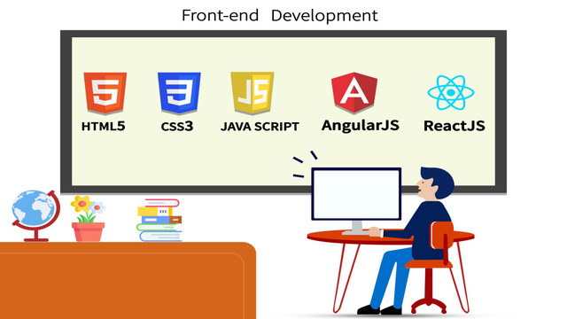

Frontend Track
Frontend refers to the process of designing and building the user interface (UI) of a website or application that users interact with directly without any interruptions.
Start DiscoverFrontend refers to the process of designing and building the user interface (UI) of a website or application that users interact with directly without any interruptions.
Start Discover
Backend refers to the part of a software system or application that runs on the server-side and is responsible for managing databases to the frontend.
Start DiscoverUI and UX design often work together in the design process. UI creates the visual elements of the product, while UX focuses on the overall user experience.
Start Discover
Cybersecurity refers to the practice of protecting computer systems, networks, and sensitive information from unauthorized access, theft, or damage.
Start Discover
Data analysis is used in a wide range of fields, including business and engineering. It is used to solve complex problems and make data-driven decisions.
Start DiscoverTesting is a critical part of the software development lifecycle. It involves testing the software to ensure that it meets the requirements and functions as intended..
Start Discover
Marketing is the process of identifying, creating, promoting, and distributing products or services that meet the needs and wants of customers.
Start DiscoverSales track is a business function that involves the process of selling products or services to customers. The goal of sales is to generate revenue and increase profits.
Start Discover
Call Center is a centralized office or facility that is set up to handle large volumes of telephone calls, typically for customer service or sales purposes.
Start DiscoverFinance is a critical part of business operations that involves managing financial resources and making decisions related to investments and financial planning.
Start DiscoverAuditing is a critical part of ensuring the accuracy and integrity of financial information. It involves examining financial statements and documents.
Start DiscoverHuman resources (HR) refers to the department or function within an organization that is responsible for managing the organization's employees.
Start Discover